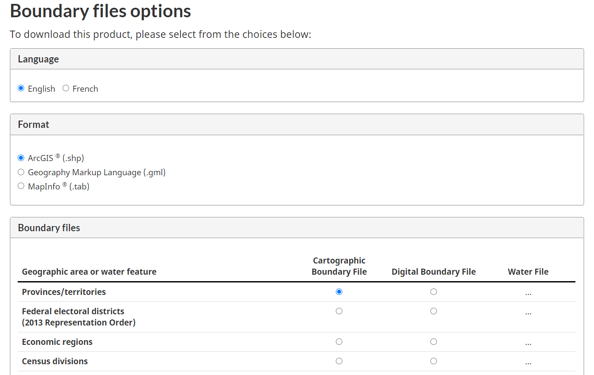

GEODE USER’S MANUAL
2021-03-31
Chapter 1 Background
1.1 Purpose
Geode is a software tool for mapping and analysis of geospatial data. It was designed in consultation with partners across the Canadian provincial and territorial cancer agencies.
Development of geode was motivated by a need for local information on cancer screening. The tool is intended to support the work of jurisdictions as they map and analyze cancer screening data, but is flexible enough to allow for a wide variety of geospatial work. The tool supports mapping and analysis of any geospatial boundary data available via shapefiles, any point locations identifiable as x-y positions (e.g., longitude and latitude), and any measures that can be assigned to regions (e.g., population size and density, age and sex distribution, counts and rates of disease or health conditions, socio-economic indicators, environmental health measures, etc.).
Users of this tool are expected to have a basic understanding of the characteristics, limitations and use of geospatial data and the basic methods used in the analysis of such data.
1.2 System requirements
The geode package was written in the freely available, open source software R (https://cran.r-project.org/). The tool is intended to be used with R version 4.0.0 (April 2020) or later and RStudio (https://rstudio.com/) version 1.2.1335 or later. Earlier versions of R will not support all of the functionality of this tool and must be updated prior to installation.
It should be noted that R is an ‘in-memory’ software, such that all data work is carried out in RAM. This has the benefit of enhanced performance, but can be an important consideration when working with large datasets. Users will need to ensure that their machines running R have sufficient RAM to accommodate the spatial datasets they wish to analyze.
A number of R packages are used by geode, including sf, tmap, ggplot2, and spdep. The appropriate versions of all required packages will be installed if you follow the instructions provided here. However, users must have read/write access to a local or network folder for installing and updating R packages.
This tool is designed to be compatible with the essential data manipulation functions of R, particularly those from the tidyverse packages dplyr and tidyr, so that it integrates seamlessly with R workflows.
1.3 Downloading and installing
In order to get started with geode, you must first install the package on your computer. Note that installation may take only a few minutes (if you already have most of the required R libraries), but could take half-an-hour or more (e.g., if you are starting from a newly downloaded version of R).
Installation can either be done directly in your R session, by downloading the package from GitHub:
install.packages("remotes")
remotes::install_github("cpacc/geode")Or, you can install from the geode zip file following these two steps:
First, save the zip file to your computer and unzip using e.g., WinZip, 7-Zip, etc.
Second, update the filepath shown below (my_libpath) so that it points to the location on your computer where the geode source file (“geode_0.1.1.tar.gz”) is saved. Run the updated lines of code in your RStudio console and geode will be installed.
# specify current location of geode source file on your computer
my_libpath <- "C:/Users/Michael/Documents/R/working dir/geode_prototype/R"
package_name <- "geode_0.1.1.tar.gz"
# install geode
install.packages(paste(my_libpath, package_name, sep = "/"),
repos = NULL, type = "source")Regardless of whether you install from Github or from the zip file, this process will also install other R packages (‘dependencies’) used by geode from an online repository. It may take several minutes to install all dependencies and you may be asked i) if you want to update certain packages that have more recent versions available (recommended, but probably not essential – this could take a while if many packages need updating), and ii) if you wish to install from sources the packages which need compilation (recommended and probably essential in order to get the appropriate version of the required packages).
Note that installation of geode and its dependencies only needs to be done the first time you use geode, or if there are any updates released to the package itself.
After installation, you should see something like the following in your RStudio console window:
* installing *source* package 'geode' ...
** using staged installation
** R
** byte-compile and prepare package for lazy loading
** help
*** installing help indices
converting help for package 'geode'
finding HTML links ... done
geo_calculate html
geo_detect html
geo_distance html
geo_export html
geo_import html
geo_plot html
pipe html
** building package indices
** testing if installed package can be loaded from temporary location
*** arch - i386
*** arch - x64
** testing if installed package can be loaded from final location
*** arch - i386
*** arch - x64
** testing if installed package keeps a record of temporary installation path
* DONE (geode)Now that it’s installed, you only need to load the geode package for use when you start a new R session.
library(geode)Before working with your own data, it is strongly recommended that you try the example in Chapter 2 (see 2.2 Getting started) and some of the examples found later in Chapter 4.
1.4 Help files
If geode installed and loaded correctly, you will be able to access the help files supporting the available functions. Each help file contains a brief description of the function itself and an overview of the syntax needed to use the function properly. Help files also contain simple examples of how a function may be used.
For example, try running the help commands below in the console window of RStudio – help text should appear in the Help window at bottom right of your RStudio session.
Access the function for importing spatial data:
?geo_importAccess the function for plotting maps:
?geo_plotAccess the function for calculating spatial statistics/generating statistical maps:
?geo_calculateAccess the function for identifying spatial clusters:
?geo_detectAccess the function for calculating and mapping proximity:
?geo_distanceAccess the function for exporting data:
?geo_exportComplete help documentation is also included in Chapter 5 of this manual.
1.5 Boundary files and sample data sets
The geode package can work with any geospatial data based on shapefiles (.shp) and corresponding attribute data from comma separated value files (.csv). The examples provided in this user’s manual make use of publicly available geospatial datasets, as described below.
A wide range of geographic data are freely available from Statistics Canada. A helpful reference page, containing links to geographic boundary files, maps, attribute data and references, can be found at:
https://www12.statcan.gc.ca/census-recensement/2016/geo/index-eng.cfm
In particular, geographic boundary files from the Canadian Census are available at:
https://www12.statcan.gc.ca/census-recensement/2011/geo/bound-limit/bound-limit-eng.cfm
There are two ways to obtain these boundary files. First, users can select a census year and then use the point-and-click options to define a boundary file for download. In geode we exclusively use shapefiles (.sph) to define geographic boundaries – the Statistics Canada website identifies these as “ArcGIS” files.

After clicking ‘Continue,’ a download link will appear allowing you to save the selected boundary file as a zip folder (there are also instructions provided on how to open zip files). Once you have saved and unzipped the file, it can be directly used by geode: simply specify the folder path for the shapefile in the geo_import() function.
Alternatively, users can download and unzip boundary files directly in R. For example, imagine we have used the point-and-click options on the above Statistic Canada webpage to select a shapefile (format ‘ArcGIS’) for the Canadian Provinces/territories. When we click ‘Continue’ a download link appears for our file: ‘lpr_000b16a_e.zip (ZIP version, 27,960.0 kb).’ In Windows, we can right-click on this link and copy the link address so that it can be pasted into our R script for further use.
In the example code below, we use this link address as our ‘source_path’ and also define the ‘destination_path’ on our computer where the zip file should be saved. It is then simply a matter of using the R functions download.file() and unzip() to retrieve the shapefile from the Statistics Canada website and unzip the folder so that we can import the boundaries using geode.
source_path <- "https://www12.statcan.gc.ca/census-recensement/2011/geo/bound-limit/files-fichiers/2016/lpr_000b16a_e.zip"
destination_path <- "C:/Users/Michael/Documents/R/data/lpr_000b16a_e.zip" # change to your download folder path
download.file(url = source_path, destfile = destination_path)
unzip(zipfile = destination_path)Large shapefiles (e.g., dissemination blocks for all of Canada) may take several minutes to download. Fortunately, you only need to download and unzip a shapefile once.
Many of the example datasets used in this manual are from the Statistics Canada website. In particular, geographic boundary data files were obtained from:
https://www12.statcan.gc.ca/census-recensement/2011/geo/bound-limit/bound-limit-2016-eng.cfm
and corresponding geographic attributes were obtained from:
https://www12.statcan.gc.ca/census-recensement/2011/geo/ref/att-eng.cfm
Specific data for British Columbia was obtained from DataBC at